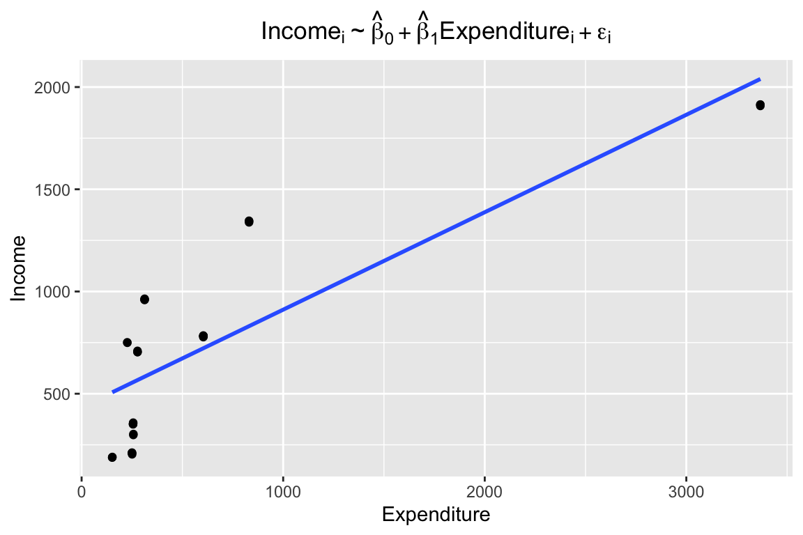
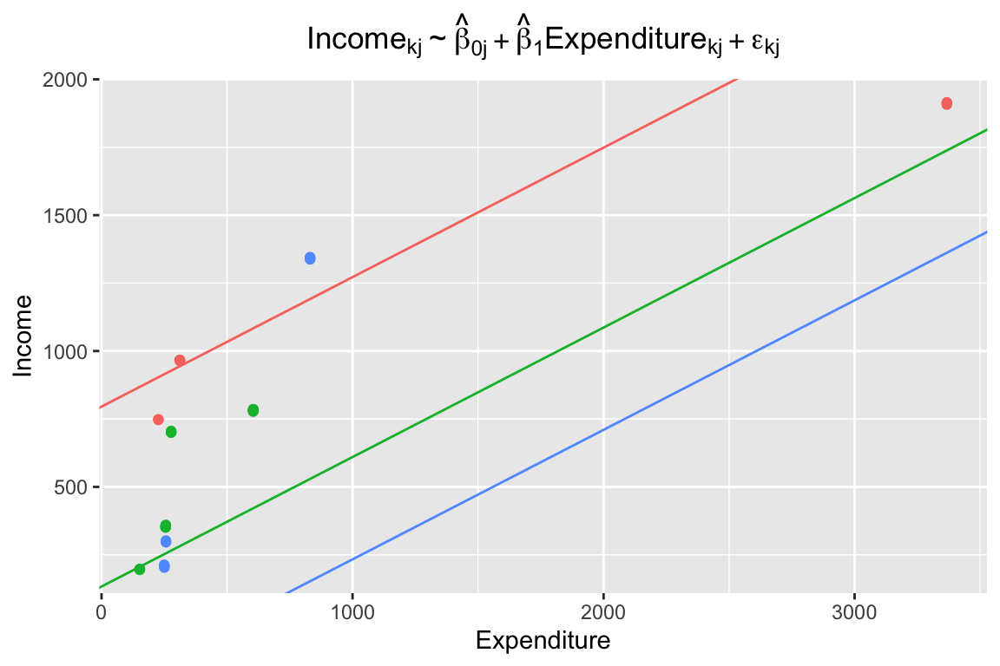
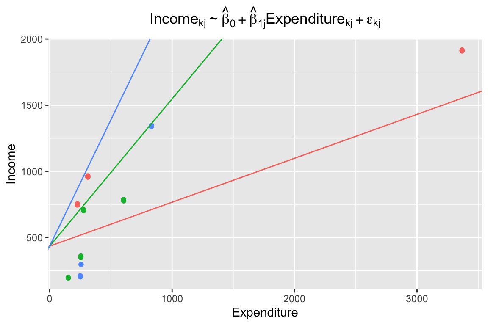
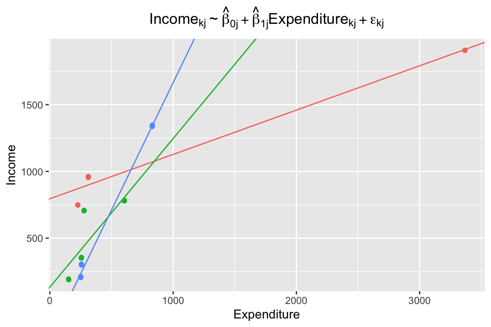
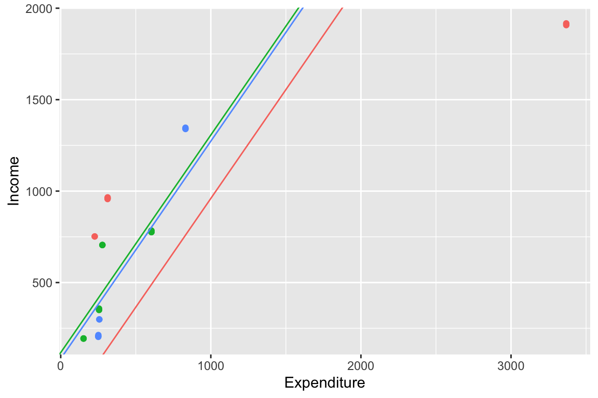
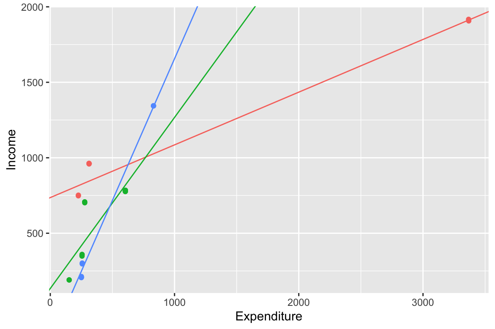
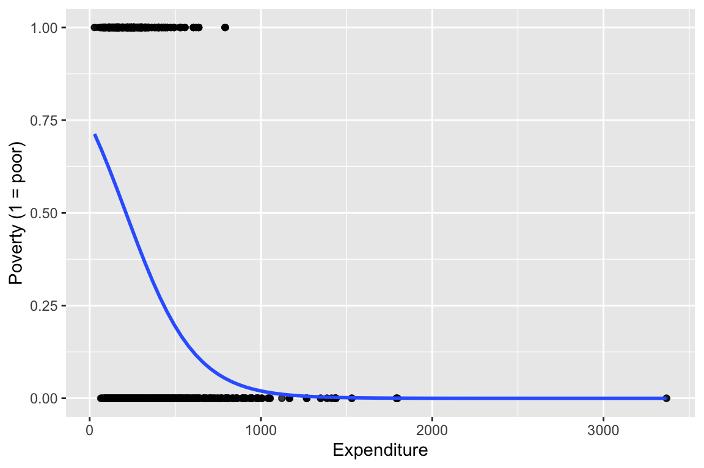
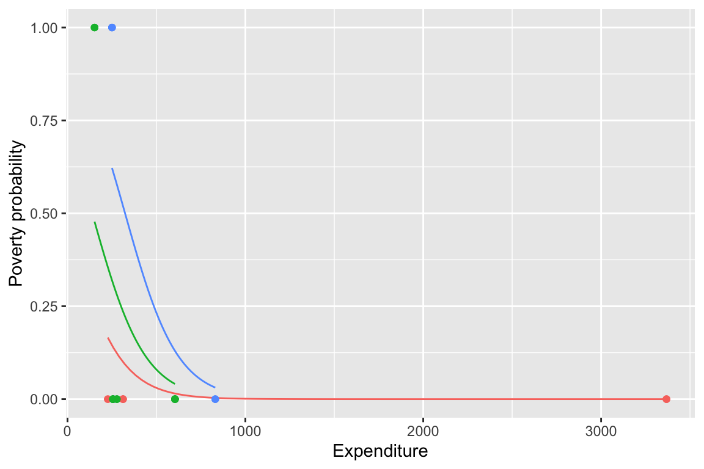
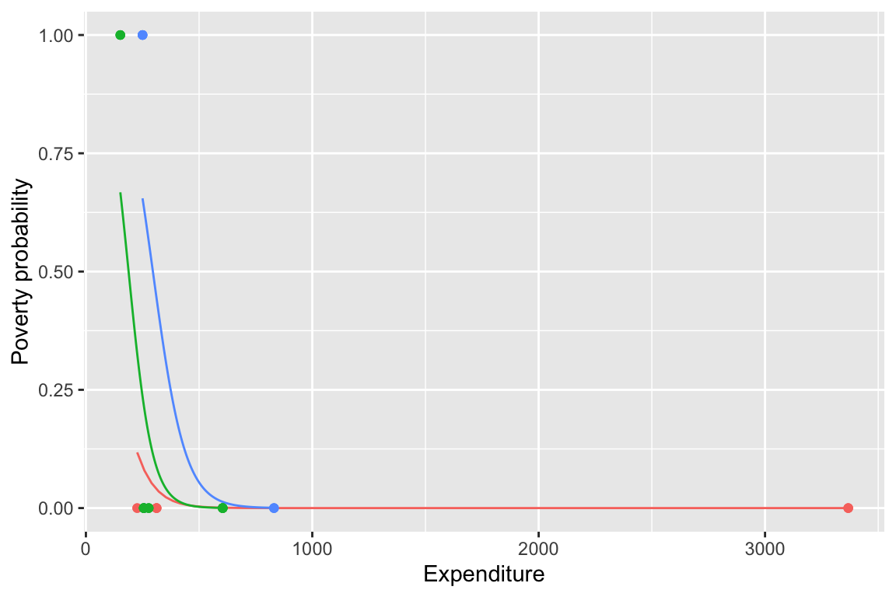

library(tidyverse)
library(lme4)7 Modelos multinivel
Los modelos multinivel, también conocidos como modelos jerárquicos, son, de acuerdo con Goldstein (2011) y Rabe-Hesketh y Skrondal (2012), una técnica estadística diseñada para el análisis de datos con estructura jerárquica, como los que provienen de encuestas de hogares, en donde las unidades de observación no son independientes entre sí. Los individuos pertenecen a hogares, los hogares se ubican en áreas geográficas específicas (UPMs) y estas, a su vez, forman parte de unidades territoriales más amplias (estratos o dominios). Como consecuencia, las observaciones que comparten un mismo contexto suelen presentar características más similares entre sí que aquellas pertenecientes a contextos diferentes. Esta estructura de dependencia viola uno de los supuestos fundamentales de los modelos de regresión convencionales y puede conducir a estimaciones ineficientes e inferencias incorrectas.
A diferencia de los modelos de regresión convencionales, los modelos multinivel reconocen que las observaciones pueden estar agrupadas en distintos niveles y que cada uno de ellos puede contribuir a explicar la variabilidad observada. En consecuencia, permiten representar simultáneamente los efectos asociados a las características de las unidades de análisis y aquellos derivados del entorno o contexto en el que estas se encuentran. Esta formulación resulta especialmente útil cuando se busca estudiar fenómenos determinados tanto por factores individuales como por características de los hogares, comunidades o áreas geográficas.
Otra característica relevante de los modelos multinivel es que permiten, como explican Goldstein (2011) y Snijders y Bosker (2011), cuantificar la proporción de la variabilidad asociada a cada nivel de agrupación presente en los datos. Mientras los efectos fijos resumen la relación promedio entre la variable respuesta y las covariables incluidas en el modelo, los efectos aleatorios representan las diferencias sistemáticas entre los grupos que no son explicadas por dichas covariables. Gracias a esta estructura, es posible modelar explícitamente la dependencia entre observaciones pertenecientes a un mismo grupo y obtener inferencias más adecuadas cuando los datos presentan organización jerárquica.
El desarrollo teórico y metodológico de los modelos multinivel ha sido ampliamente documentado en la literatura de muestreo. Entre las referencias más influyentes se encuentran los trabajos de Gelman y Hill (2006), Goldstein (2011) y Rabe-Hesketh y Skrondal (2012), que presentan los fundamentos conceptuales, las estrategias de estimación y diversas aplicaciones de estos modelos en contextos sociales y demográficos.
Por otra parte, Browne y Draper (2006) comparan distintos enfoques de estimación para modelos jerárquicos, evaluando las diferencias entre los métodos basados en máxima verosimilitud y los enfoques bayesianos.
En el ámbito de la epidemiología social, Merlo et al. (2006) destacan la utilidad de los modelos multinivel para estudiar fenómenos contextuales, mostrando cómo factores asociados al entorno pueden contribuir a explicar desigualdades en salud y otros resultados de interés poblacional.
Además, como lo advierten Pfeffermann et al. (1998) y Carle (2009), es necesario distinguir entre la jerarquía sustantiva que se desea modelar y la estructura del diseño muestral: una UPM, un estrato de diseño o un dominio no constituye automáticamente un contexto intercambiable susceptible de representarse mediante un efecto aleatorio. Esa decisión requiere una justificación conceptual y suficiente información en cada grupo.
7.1 Motivación
Para iniciar este capítulo, se cargan tidyverse para la manipulación de datos y la generación de gráficos, y lme4, presentado por Bates et al. (2015), para la estimación de modelos multinivel. Asimismo, se importa la base de datos que será utilizada a lo largo de los ejemplos. Los títulos matemáticos de algunas figuras se formatean con latex2exp, llamado de forma explícita en el código.
survey_data <- readRDS("../Data/encuesta.rds") %>%
mutate(poor = ifelse(Poverty != "NotPoor", 1, 0))Con fines ilustrativos, los ejemplos de esta sección se desarrollan a partir de una submuestra de la encuesta. El siguiente bloque de código construye la base de datos utilizada en los ejemplos del capítulo. Para ello, identifica los tres estratos con menor número de hogares y conserva únicamente las variables requeridas para el análisis: ingreso, gasto, estrato, sexo, región, zona de residencia y condición de pobreza.
plot_data <- survey_data %>%
select(HHID, Stratum) %>%
distinct() %>%
group_by(Stratum) %>%
tally() %>%
arrange(n) %>%
select(-n) %>%
slice(1:3L) %>%
inner_join(survey_data, by = "Stratum") %>%
select(Income, Expenditure, Stratum, Sex, Region, Zone, poor)Como punto de partida, se ajusta un modelo de regresión lineal convencional que relaciona el ingreso de los hogares con su nivel de gasto, ignorando temporalmente la estructura jerárquica de los datos. Bajo esta especificación, se asume que todas las observaciones son independientes y que la relación entre ingreso y gasto es homogénea para todos los hogares, independientemente del estrato al que pertenezcan. La figura 7.1 presenta la recta de regresión estimada junto con los datos observados.
ggplot(data = plot_data,
aes(y = Income, x = Expenditure)) +
geom_jitter() +
geom_smooth(formula = y ~ x, method = "lm", se = FALSE) +
ggtitle(latex2exp::TeX(
"$Income_{i} \\sim \\hat{\\beta}_{0} + \\hat{\\beta}_{1}Expenditure_{i} + \\epsilon_{i}$"
)) +
theme(
legend.position = "none",
plot.title = element_text(hjust = 0.5)
)
Si bien este modelo resulta útil como referencia inicial, sus supuestos suelen ser poco realistas en el contexto de encuestas de hogares. En particular, la independencia entre observaciones puede verse comprometida cuando los hogares pertenecen a estratos que comparten características socioeconómicas, demográficas o geográficas similares. Asimismo, es posible que los niveles promedio de ingreso difieran sistemáticamente entre estratos, aun cuando la relación entre ingreso y gasto sea semejante. Como señalan Finch, Bolin, y Kelley (2019), ignorar esta estructura jerárquica puede conducir a estimaciones incorrectas de los errores estándar y, en consecuencia, a inferencias estadísticas poco confiables.
Con fines exclusivamente ilustrativos, se incorpora gradualmente la estructura jerárquica de los datos al proceso de modelación. Para ello, se ajusta inicialmente un modelo que permite que cada estrato tenga su propio intercepto, mientras mantiene una pendiente común para todas las observaciones. Esta especificación resulta útil para visualizar cómo los niveles promedio de ingreso pueden diferir entre estratos, aun cuando la relación entre ingreso y gasto se considere constante.
beta_1 <- coef(lm(Income ~ Expenditure, data = plot_data))[2]
model_coef <- plot_data %>%
group_by(Stratum) %>%
summarise(beta_0 = coef(lm(Income ~ Expenditure))[1]) %>%
mutate(beta_1 = beta_1)De esta manera, el modelo introduce una primera fuente de heterogeneidad entre grupos y permite apreciar las limitaciones del modelo de regresión simple presentado anteriormente, el cual asumía una única recta de regresión para toda la población. La figura 7.2 presenta las rectas de regresión con interceptos diferenciados por estrato:
ggplot(data = plot_data,
aes(y = Income, x = Expenditure, colour = Stratum)) +
geom_jitter() +
geom_abline(data = model_coef,
mapping = aes(slope = beta_1, intercept = beta_0, colour = Stratum)) +
ggtitle(latex2exp::TeX(
"$Income_{kj} \\sim \\hat{\\beta}_{0j} + \\hat{\\beta}_{1}Expenditure_{kj} + \\epsilon_{kj}$"
)) +
theme(
legend.position = "none",
plot.title = element_text(hjust = 0.5)
)
Como siguiente paso, se considera una especificación alternativa en la que todos los estratos comparten un mismo nivel promedio de ingreso, representado por un intercepto común, pero se permite que la relación entre ingreso y gasto varíe entre estratos mediante pendientes específicas para cada uno de ellos.
beta_0 <- coef(lm(Income ~ Expenditure, data = plot_data))[1]
model_coef <- plot_data %>%
group_by(Stratum) %>%
summarise(beta_1 = coef(lm(Income ~ Expenditure))[2]) %>%
mutate(beta_0 = beta_0)Bajo esta especificación, las diferencias entre estratos se manifiestan en la intensidad de la asociación entre ingreso y gasto, más que en sus niveles promedio. La figura 7.3 permite visualizar estas diferencias en las trayectorias de regresión estimadas para cada estrato.
ggplot(data = plot_data,
aes(y = Income, x = Expenditure, colour = Stratum)) +
geom_jitter() +
geom_abline(data = model_coef,
mapping = aes(slope = beta_1, intercept = beta_0, colour = Stratum)) +
ggtitle(latex2exp::TeX(
"$Income_{kj} \\sim \\hat{\\beta}_{0} + \\hat{\\beta}_{1j}Expenditure_{kj} + \\epsilon_{kj}$"
)) +
theme(
legend.position = "none",
plot.title = element_text(hjust = 0.5)
)
Finalmente, se considera la especificación más flexible de las presentadas hasta el momento, permitiendo que tanto el nivel promedio de ingreso como la relación entre ingreso y gasto varíen entre estratos. Bajo este enfoque, cada estrato posee su propia recta de regresión, con interceptos y pendientes estimados de manera independiente.
model_coef <- plot_data %>%
group_by(Stratum) %>%
summarise(
beta_0 = coef(lm(Income ~ Expenditure))[1],
beta_1 = coef(lm(Income ~ Expenditure))[2]
)Esta formulación permite capturar simultáneamente diferencias en los niveles de ingreso y en la intensidad de su asociación con el gasto. La figura 7.4 muestra las rectas ajustadas para cada estrato bajo esta especificación.
ggplot(data = plot_data,
aes(y = Income, x = Expenditure, colour = Stratum)) +
geom_jitter() +
geom_abline(data = model_coef,
mapping = aes(slope = beta_1, intercept = beta_0, colour = Stratum)) +
ggtitle(latex2exp::TeX(
"$Income_{kj} \\sim \\hat{\\beta}_{0j} + \\hat{\\beta}_{1j}Expenditure_{kj} + \\epsilon_{kj}$"
)) +
theme(
legend.position = "none",
plot.title = element_text(hjust = 0.5)
)
Aunque esta última especificación ofrece una representación más flexible de los datos y permite capturar las particularidades de cada estrato, presenta una limitación importante: los parámetros se estiman de manera completamente independiente para cada grupo. Como consecuencia, no se aprovecha la información compartida entre estratos que podrían presentar patrones similares, lo que puede generar estimaciones inestables, especialmente en aquellos grupos con un número reducido de observaciones.
Los modelos multinivel superan esta dificultad mediante un mecanismo conocido como encogimiento (shrinkage), descrito por Gelman y Hill (2006) y Goldstein (2011), en el cual las estimaciones específicas de cada grupo se obtienen combinando la información propia del grupo con la información proveniente del conjunto de la población. De esta manera, se logra un equilibrio entre la representación de las diferencias entre estratos y la eficiencia estadística de las estimaciones.
7.2 Pesos q-weighted
En relación con la incorporación de pesos de muestreo en modelos multinivel, Pfeffermann et al. (1998) y Asparouhov (2006) proponen enfoques basados en pseudo-máxima verosimilitud, en particular mediante procedimientos de mínimos cuadrados generalizados ponderados. Alternativamente, Rabe-Hesketh y Skrondal (2006) proponen métodos basados en algoritmos EM para la estimación de modelos jerárquicos con ponderaciones. Carle (2009) y Cai (2013) destacan la importancia de incorporar los pesos cuando el muestreo es informativo, aunque no existe una única estrategia metodológica para su implementación.
Desde una perspectiva general, el enfoque de máxima verosimilitud consiste en estimar los parámetros del modelo identificando aquellos valores que maximizan la probabilidad de observar los datos disponibles bajo la especificación asumida. Una extensión importante de este enfoque es la máxima verosimilitud restringida (REML), la cual, como explican Kreft y De Leeuw (1998) y Bates et al. (2015), mejora la estimación de los componentes de varianza al considerar la pérdida de grados de libertad debida a la estimación de los efectos fijos, produciendo en muchos casos estimaciones menos sesgadas que la máxima verosimilitud convencional.
En el contexto de los modelos multinivel con datos provenientes de encuestas, una dificultad adicional radica en la incorporación coherente de los pesos de muestreo a través de los distintos niveles de la jerarquía. Como señalan Pfeffermann et al. (1998), la estructura agrupada de los datos implica que las observaciones no son independientes, por lo que la función de log-verosimilitud no puede descomponerse como una suma simple de contribuciones individuales. En su lugar, es necesario considerar explícitamente la dependencia entre los distintos niveles del diseño muestral para lograr inferencias adecuadas.
Para ajustar modelos multinivel con datos provenientes de encuestas complejas, una alternativa consiste en utilizar el enfoque de pesos q-weighted propuesto por Pfeffermann (2011). La idea central de este método es eliminar de los pesos muestrales la componente sistemática explicada por las covariables incluidas en el modelo, de modo que los pesos resultantes conserven únicamente la parte residual atribuible al mecanismo de selección.
No obstante, este no es el único enfoque disponible para la estimación de modelos multinivel con datos de encuestas complejas y tampoco sustituye el uso de pesos condicionales o de pesos escalados en cada etapa del diseño, requeridos por algunos métodos de pseudo-verosimilitud multinivel, como se discute en Pfeffermann et al. (1998) y Carle (2009). El procedimiento para construir los pesos q-weighted se resume en los siguientes pasos:
Ajustar un modelo de regresión para los factores de expansión finales de la encuesta, utilizando como variables explicativas el mismo conjunto de covariables que será empleado en el modelo multinivel. Siendo \(w_k\) el factor de expansión original de la unidad \(k\) y \(\mathbf{x}_k\) el vector de covariables. Entonces se ajusta el modelo
\[ w_k = f(\mathbf{x}_k, \boldsymbol{\beta}) + \varepsilon_k, \]
donde \(f(\cdot)\) representa la relación funcional entre los pesos \(w_k\) y las covariables \(\mathbf{x}_k\), a través de los coeficientes \(\boldsymbol{\beta}\).
Obtener los valores predichos del modelo para cada unidad de observación, de tal forma que:
\[ \hat{w}_k = f(\mathbf{x}_k, \hat{\boldsymbol{\beta}}). \]
Estos valores representan la componente de los factores de expansión explicada por las covariables incluidas en el modelo.
Construir los pesos q-weighted dividiendo los factores de expansión originales por la estimación de su esperanza condicional en la muestra,
\[ q_k = \frac{w_k}{\widehat{E}_s(w_k\mid\mathbf{x}_k)}. \]
De esta forma, los nuevos pesos reflejan la variación residual de los factores de expansión una vez controlado el efecto de las covariables.
Definir el nuevo diseño muestral utilizando los pesos ajustados \(q_k\) en lugar de los pesos originales \(w_k\), y emplear este diseño para la estimación de los parámetros del modelo multinivel.
El siguiente código implementa el procedimiento de construcción de pesos q-weighted. En primer lugar, ajusta un modelo de regresión lineal que explica los factores de expansión originales a partir de la variable explicativa gasto. De esta forma, los pesos resultantes conservan únicamente la componente de variación no explicada por las covariables incluidas en el modelo multinivel.
mod_qw <- lm(wk ~ Expenditure, data = survey_data)
predicted_weights <- predict(mod_qw)
stopifnot(all(is.finite(predicted_weights)), all(predicted_weights > 0))
survey_data$qk <- survey_data$wk / predicted_weightsEsta implementación es ilustrativa. La comprobación con stopifnot() evita continuar si los valores predichos no son finitos o estrictamente positivos, pero todavía debe evaluarse que el modelo represente adecuadamente \(E_s(w_k\mid\mathbf{x}_k)\); una regresión lineal de los pesos puede producir predicciones no válidas. Además, el vector final wk no necesariamente permite reconstruir por sí solo los pesos condicionales de cada etapa requeridos por un modelo multinivel ponderado.
7.3 Modelo lineal multinivel
Los modelos multinivel más utilizados en la práctica corresponden a extensiones del modelo lineal clásico para datos con estructura jerárquica. En su formulación básica, estos modelos asumen que la variable respuesta es continua y sigue una distribución normal condicional a los efectos fijos y aleatorios incluidos en el modelo. Asimismo, se supone que los efectos aleatorios y los errores residuales son independientes entre sí y se distribuyen normalmente con media cero y varianzas constantes.
7.3.1 Modelo nulo
En el análisis de regresión multinivel, Goldstein (2011) y Rabe-Hesketh y Skrondal (2012) distinguen dos tipos de parámetros: los coeficientes de regresión, conocidos como parámetros fijos, y los componentes de varianza asociados a los efectos aleatorios. Una etapa inicial fundamental en este tipo de análisis consiste en descomponer la variabilidad total de la variable dependiente en los distintos niveles de la estructura jerárquica. En el contexto del ejemplo anterior, esta descomposición permite separar la variación del ingreso en una componente atribuible a diferencias dentro de los estratos y otra asociada a diferencias entre estratos.
El punto de partida para esta descomposición es, siguiendo a Snijders y Bosker (2011), el denominado modelo nulo, el cual no incorpora variables explicativas y se expresa como
\[ y_{kj} = \beta_{0j} + \epsilon_{kj} \]
En donde \(y_{kj}\) denota el valor observado del ingreso para la unidad \(k\) en el estrato \(j\). El término \(\beta_{0j}\) representa el intercepto específico de cada estrato, capturando las diferencias en los niveles promedio de la variable entre grupos. Finalmente, \(\epsilon_{kj}\) corresponde al error a nivel de unidad, el cual recoge la variabilidad no explicada dentro de cada estrato y se asume con media cero y varianza constante condicional al grupo.
A su vez, el intercepto por estrato puede descomponerse en una parte común a todos los estratos y una desviación específica de cada uno de ellos, de la siguiente forma:
\[ \beta_{0j} = \gamma_{00} + \tau_{0j} \]
donde \(\gamma_{00}\) representa el intercepto promedio global y \(\tau_{0j}\) es el efecto aleatorio para el intercepto que captura la desviación del estrato \(j\), permitiendo modelar explícitamente la heterogeneidad entre estratos. Además, los componentes aleatorios del modelo se asumen distribuidos normalmente con media cero y varianzas específicas para cada nivel de la jerarquía. En particular, el efecto aleatorio asociado al intercepto por estrato cumple
\[ \tau_{0j} \sim N\left(0, \sigma_{\tau}^{2}\right), \]
lo que implica que las desviaciones de cada estrato respecto al intercepto global se distribuyen alrededor de cero, con una variabilidad determinada por \(\sigma_{\tau}^{2}\). De manera análoga, el término de error a nivel de unidad sigue la distribución
\[ \epsilon_{kj} \sim N\left(0, \sigma_{\epsilon}^{2}\right), \]
donde \(\sigma_{\epsilon}^{2}\) representa la variabilidad residual dentro de los estratos. A partir de este modelo se define, como muestran Goldstein (2011) y Snijders y Bosker (2011), el coeficiente de correlación intraclase (ICC, por sus siglas en inglés), que cuantifica la proporción de la varianza total explicada por las diferencias entre estratos:
\[ \rho = \frac{\sigma_{\tau}^{2}}{\sigma_{\tau}^{2} + \sigma_{\epsilon}^{2}} \]
Un valor elevado del ICC indica que una proporción importante de la variabilidad total de la variable de interés se debe a diferencias entre estratos, lo que sugiere la presencia de heterogeneidad relevante entre grupos y la necesidad de incorporar explícitamente dicha estructura en el modelo. En contraste, un ICC bajo implica que la variabilidad se concentra principalmente dentro de los estratos, los cuales presentan una mayor homogeneidad relativa entre sí.
Siguiendo con el análisis de la encuesta de ejemplo, cuando la variable de interés es el ingreso, el modelo nulo constituye el punto de partida para cuantificar qué proporción de la variabilidad total se debe a diferencias entre estratos y qué proporción corresponde a diferencias entre hogares dentro de un mismo estrato.
La estimación de modelos multinivel en R se realiza mediante el paquete lme4, presentado por Bates et al. (2015). En particular, la función lmer() permite especificar los efectos aleatorios mediante expresiones de la forma (efecto | grupo). En este contexto, la expresión (1 | Stratum) indica que el modelo incluye un intercepto aleatorio para cada estrato. El valor 1 representa el intercepto del modelo, mientras que Stratum identifica la variable de agrupación.
En lme4, el argumento weights representa pesos previos que modifican la contribución residual, pero no implementa por sí solo la pseudo-verosimilitud multinivel con pesos de diseño por etapa ni la estimación de varianza del diseño. Por tanto, los modelos ponderados con qk que siguen deben interpretarse como una ilustración modelada, no como una solución general para inferencia de encuestas complejas; Carle (2009) recomienda usar pesos escalados y software que los incorpore expresamente en la estimación multinivel.
mod_null <- lmer(
Income ~ (1 | Stratum),
data = survey_data,
weights = qk
)La tabla 7.1 presenta los interceptos estimados para cada estrato a partir del modelo nulo. Dado que este modelo no incorpora variables explicativas, cada intercepto puede interpretarse como el ingreso promedio esperado en el correspondiente estrato. Los resultados evidencian diferencias importantes entre grupos: mientras que el estrato idStrt004 presenta el mayor ingreso promedio estimado (959.6), el estrato idStrt009 registra el menor valor (207.6). Estas diferencias sugieren la existencia de una variabilidad sustancial entre estratos, justificando la incorporación de efectos aleatorios para modelar explícitamente la estructura jerárquica de los datos.
coef_mod_null <- coef(mod_null)$Stratum
coef_mod_null %>%
slice(1:12L)coef_mod_null <- coef(mod_null)$Stratum
coef_mod_null %>%
slice(1:12L) %>%
tabla_fmt()| (Intercept) | |
|---|---|
| idStrt001 | 635 |
| idStrt002 | 507 |
| idStrt003 | 486 |
| idStrt004 | 960 |
| idStrt005 | 518 |
| idStrt006 | 439 |
| idStrt007 | 477 |
| idStrt008 | 377 |
| idStrt009 | 218 |
| idStrt010 | 594 |
| idStrt011 | 590 |
| idStrt012 | 362 |
A partir de los componentes de varianza estimados en el modelo nulo, la correlación intraclase se calcula mediante la función icc() del paquete performance, documentada por Lüdecke et al. (2026). Este indicador cuantifica la proporción de la variabilidad total del ingreso que puede atribuirse a diferencias entre estratos, constituyendo una medida de la dependencia existente entre observaciones pertenecientes a un mismo grupo. Los resultados obtenidos se presentan en la tabla 7.2.
performance::icc(mod_null) %>%
as.data.frame()performance::icc(mod_null) %>%
as.data.frame() %>%
tabla_fmt()| ICC_adjusted | ICC_unadjusted | optional |
|---|---|---|
| 0.329 | 0.329 | FALSE |
La correlación intraclase estimada de 32% indica que aproximadamente un tercio de la variabilidad total observada en el ingreso se debe a diferencias entre estratos, mientras que el porcentaje restante corresponde a diferencias entre hogares dentro de los mismos estratos. Por último, como el modelo nulo no incluye ningún predictor, la estimación del ingreso dentro de cada estrato es constante e igual al intercepto estimado para ese estrato.
7.3.2 Modelo con intercepto aleatorio
El modelo multinivel más simple que incorpora covariables corresponde, según Goldstein (2011) y Rabe-Hesketh y Skrondal (2012), al modelo de intercepto aleatorio. En esta especificación, se asume que los efectos de las variables explicativas son comunes a todos los estratos, mientras que el nivel promedio de la variable respuesta puede variar entre ellos. El modelo se expresa como
\[ y_{kj} = \beta_{0j} + \mathbf{x}_{kj}\boldsymbol{\beta} + \epsilon_{kj} \]
En donde \(y_{kj}\) representa el valor observado de la variable respuesta para la unidad \(k\) perteneciente al estrato \(j\), \(\mathbf{x}_{kj}\) es el vector de covariables asociado a dicha unidad, \(\boldsymbol{\beta}\) es el vector de coeficientes de regresión comunes a todos los estratos y \(\epsilon_{kj}\) corresponde al error aleatorio a nivel de unidad.
Al igual que en el modelo nulo, el intercepto se modela como \(\beta_{0j} = \gamma_{00} + \tau_{0j}\); en donde \(\gamma_{00}\) representa el intercepto promedio global y \(\tau_{0j}\) es el efecto aleatorio asociado al estrato \(j\), que mide la desviación de dicho estrato respecto al promedio general.
Los componentes aleatorios del modelo se asumen independientes y normalmente distribuidos, de manera que \(\tau_{0j} \sim N(0,\sigma_{\tau}^{2})\) y \(\epsilon_{kj} \sim N(0,\sigma_{\epsilon}^{2})\). Bajo estas condiciones, la variabilidad total de la variable respuesta puede descomponerse en una componente entre estratos, cuantificada por \(\sigma_{\tau}^{2}\), y una componente dentro de los estratos, representada por \(\sigma_{\epsilon}^{2}\).
El siguiente código ajusta un modelo multinivel de intercepto aleatorio, en donde el ingreso (Income) se explica a partir del gasto del hogar (Expenditure), incorporando además un efecto aleatorio asociado al estrato (Stratum) y utilizando los pesos q-weighted almacenados en la variable qk. Una vez ajustado el modelo, se estima la correlación intraclase (ICC) a partir de los componentes de varianza estimados.
random_intercept_model <- lmer(
Income ~ Expenditure + (1 | Stratum),
data = survey_data,
weights = qk
)
performance::icc(random_intercept_model)# Intraclass Correlation Coefficient
Adjusted ICC: 0.203
Unadjusted ICC: 0.109La correlación intraclase ajustada de 0.196 indica que, después de controlar por el gasto del hogar (Expenditure), aproximadamente el 20% de la variabilidad residual del ingreso sigue siendo atribuible a diferencias entre estratos. Aunque este valor evidencia agrupamiento residual, el ICC por sí solo no justifica una especificación multinivel concreta; también deben considerarse la definición sustantiva de los grupos, el ajuste y los diagnósticos del modelo, como explican Snijders y Bosker (2011). Los coeficientes estimados por estrato se presentan en la tabla 7.3:
coef(random_intercept_model)$Stratum %>%
slice(1:8L)coef(random_intercept_model)$Stratum %>%
slice(1:8L) %>%
tabla_fmt()| (Intercept) | Expenditure | |
|---|---|---|
| idStrt001 | 250.4 | 1.19 |
| idStrt002 | 156.8 | 1.19 |
| idStrt003 | 142.9 | 1.19 |
| idStrt004 | 296.8 | 1.19 |
| idStrt005 | -32.4 | 1.19 |
| idStrt006 | 53.8 | 1.19 |
| idStrt007 | 12.5 | 1.19 |
| idStrt008 | 107.1 | 1.19 |
Con el fin de facilitar la visualización de los resultados del modelo, se utiliza la submuestra reducida presentada anteriormente, la cual contiene únicamente tres estratos seleccionados.
estimated_coef <- inner_join(
coef(random_intercept_model)$Stratum %>%
tibble::rownames_to_column(var = "Stratum"),
plot_data %>%
select(Stratum) %>%
distinct()
)La figura 7.5 muestra las rectas de regresión estimadas para cada estrato bajo el modelo de intercepto aleatorio. Se observa que las rectas comparten una misma pendiente, reflejando el efecto común del gasto sobre el ingreso, pero difieren en su posición vertical debido a los interceptos específicos estimados para cada estrato.
ggplot(data = plot_data,
aes(y = Income, x = Expenditure, colour = Stratum)) +
geom_jitter() +
geom_abline(data = estimated_coef,
mapping = aes(slope = Expenditure,
intercept = `(Intercept)`,
colour = Stratum)) +
theme(
legend.position = "none",
plot.title = element_text(hjust = 0.5)
)
7.3.3 Modelo con intercepto y pendiente aleatoria
Una extensión natural del modelo anterior es, como explican Goldstein (2011) y Snijders y Bosker (2011), el modelo de intercepto y pendiente aleatorios. En esta especificación, no sólo se permite que el nivel promedio de la variable respuesta varíe entre estratos, sino también que el efecto de una o más covariables difiera entre grupos. De esta manera, cada estrato puede tener su propia recta de regresión, tanto en términos de intercepto como de pendiente. El modelo puede expresarse como
\[ y_{kj} = \beta_{0j} + x_{kj}\beta_{1j} + \mathbf{z}_{kj}\boldsymbol{\beta} + \epsilon_{kj}, \]
donde \(y_{kj}\) representa el valor observado de la variable respuesta para la unidad \(k\) perteneciente al estrato \(j\), \(x_{kj}\) corresponde a la covariable cuya pendiente se permite variar entre estratos, \(\mathbf{z}_{kj}\) contiene las covariables con efectos fijos comunes a todos los grupos, y \(\epsilon_{kj}\) es el término de error a nivel de unidad. En este modelo, tanto el intercepto como la pendiente asociada a \(x_{kj}\) se consideran aleatorios y se descomponen de la siguiente forma:
\[ \beta_{0j} = \gamma_{00} + \tau_{0j}, \qquad \beta_{1j} = \gamma_{10} + \tau_{1j} \]
donde \(\gamma_{00}\) y \(\gamma_{10}\) representan, respectivamente, el intercepto y la pendiente promedio en la población, mientras que \(\tau_{0j}\) y \(\tau_{1j}\) capturan las desviaciones específicas del estrato \(j\) respecto a dichos promedios. Estos efectos aleatorios se asumen normalmente distribuidos como se indica a continuación:
\[ \begin{pmatrix} \tau_{0j} \\ \tau_{1j} \end{pmatrix} \sim N\left( \begin{pmatrix} 0 \\ 0 \end{pmatrix}, \begin{pmatrix} \sigma_{\tau_0}^2 & \sigma_{\tau_{01}} \\ \sigma_{\tau_{01}} & \sigma_{\tau_1}^2 \end{pmatrix} \right), \]
mientras que el error a nivel de unidad satisface \(\epsilon_{kj} \sim N(0,\sigma_{\epsilon}^{2})\). En consecuencia, el modelo permite cuantificar no sólo la variabilidad entre estratos en los niveles promedio de la variable respuesta, sino también la heterogeneidad existente en el efecto de la covariable cuyo coeficiente se modela como aleatorio.
El siguiente código ajusta un modelo multinivel con intercepto y pendiente aleatorios en el que el ingreso (Income) se explica a partir del gasto del hogar (Expenditure); aunque la redacción anterior mencionaba Zone, esa variable no aparece en la fórmula estimada. En este caso, tanto el intercepto como el efecto del gasto pueden variar entre estratos mediante efectos aleatorios asociados a Stratum, empleando además los pesos q-weighted almacenados en la variable qk.
random_slope_model <- lmer(
Income ~ 1 + Expenditure + (1 + Expenditure | Stratum),
data = survey_data,
weights = qk
)
performance::icc(random_slope_model)# Intraclass Correlation Coefficient
Adjusted ICC: 0.690
Unadjusted ICC: 0.457Nótese que en la especificación del código se incluye simultáneamente efectos fijos y efectos aleatorios para el intercepto y la variable Expenditure. Los términos ubicados fuera del paréntesis, 1 + Expenditure, corresponden a los efectos fijos del modelo y permiten estimar el intercepto promedio global y la pendiente promedio global asociada al gasto. Por su parte, la expresión (1 + Expenditure | Stratum) incorpora las desviaciones específicas de cada estrato respecto a dichos promedios. La inclusión explícita de los efectos fijos es fundamental, ya que los efectos aleatorios se interpretan como desviaciones alrededor de una media poblacional. Los coeficientes del modelo por estrato se presentan en la tabla 7.4:
Los modelos con pendientes aleatorias requieren suficientes grupos y variación interna para estimar de manera estable la varianza y la covarianza de los efectos aleatorios; Bates et al. (2015) recomiendan revisar advertencias de convergencia y ajustes singulares antes de interpretar estos componentes.
coef(random_slope_model)$Stratum %>%
slice(1:10L)coef(random_slope_model)$Stratum %>%
slice(1:10L) %>%
tabla_fmt()| (Intercept) | Expenditure | |
|---|---|---|
| idStrt001 | -222.8 | 2.730 |
| idStrt002 | 35.5 | 1.607 |
| idStrt003 | 151.9 | 1.164 |
| idStrt004 | 224.2 | 1.353 |
| idStrt005 | -89.7 | 1.286 |
| idStrt006 | 28.6 | 1.217 |
| idStrt007 | 41.0 | 1.079 |
| idStrt008 | 163.8 | 0.928 |
| idStrt009 | 16.6 | 0.838 |
| idStrt010 | 89.9 | 1.830 |
Una vez más, con el propósito de facilitar la visualización de los resultados, se utiliza la submuestra reducida definida previamente, la cual considera únicamente tres estratos seleccionados.
estimated_coef <- inner_join(
coef(random_slope_model)$Stratum %>%
tibble::rownames_to_column(var = "Stratum"),
plot_data %>%
select(Stratum) %>%
distinct()
)La figura 7.6 presenta las rectas de regresión estimadas para cada estrato bajo el modelo de intercepto y pendiente aleatorios. A diferencia del modelo de intercepto aleatorio, en este caso las rectas difieren tanto en su posición vertical como en su inclinación, reflejando que los estratos no sólo presentan niveles promedio de ingreso distintos, sino también diferentes intensidades en la relación entre ingreso y gasto.
ggplot(data = plot_data,
aes(y = Income, x = Expenditure, colour = Stratum)) +
geom_jitter() +
geom_abline(data = estimated_coef,
mapping = aes(slope = Expenditure,
intercept = `(Intercept)`,
colour = Stratum)) +
theme(
legend.position = "none",
plot.title = element_text(hjust = 0.5)
)
7.4 Modelo logístico multinivel
Los modelos logísticos multinivel constituyen, de acuerdo con Snijders y Bosker (2011) y Rabe-Hesketh y Skrondal (2012), una extensión de los modelos multinivel para variables continuas al caso en que la variable respuesta es dicotómica. En lugar de modelar directamente el valor esperado de una variable continua, estos modelos estiman la probabilidad de ocurrencia de un evento, incorporando simultáneamente covariables individuales y efectos aleatorios asociados a los grupos de pertenencia. En el contexto de encuestas de hogares, esta formulación es especialmente útil cuando se analizan resultados binarios, como encontrarse o no en condición de pobreza, acceder o no a un servicio, participar o no en el mercado laboral, o presentar determinada característica sociodemográfica.
Al igual que en los modelos multinivel para variables continuas, el punto de partida consiste en reconocer que las unidades de observación no son independientes cuando pertenecen a un mismo grupo sustantivo. Como se advirtió al inicio, un estrato, conglomerado o dominio del diseño solo debe emplearse como nivel aleatorio cuando corresponda al contexto que se desea modelar y el supuesto de efectos intercambiables sea defendible. Sin embargo, en el caso logístico la respuesta no se representa mediante una distribución normal con un error residual aditivo, sino mediante una distribución Bernoulli condicional a la probabilidad de ocurrencia del evento. Esta probabilidad se vincula con los predictores a través de la función logit, lo que permite expresar el modelo en una escala lineal.
\[ y_{kj} \mid \pi_{kj} \sim \text{Bernoulli}(\pi_{kj}) \]
donde \(y_{kj}\) toma el valor uno si la unidad \(k\) del estrato \(j\) presenta el evento de interés y cero en caso contrario. La probabilidad condicional del evento se denota por \(\pi_{kj}=Pr(y_{kj}=1)\) y se relaciona con el predictor lineal mediante
\[ \text{logit}(\pi_{kj}) = \log\left(\frac{\pi_{kj}}{1-\pi_{kj}}\right) = \eta_{kj} \]
En esta formulación, \(\eta_{kj}\) cumple un papel análogo al valor esperado lineal de los modelos para variables continuas. La diferencia central es que los efectos fijos y aleatorios actúan sobre la escala logit y no directamente sobre la probabilidad. Por tanto, las diferencias entre estratos se interpretan como desplazamientos en los log-odds del evento, los cuales luego se transforman a probabilidades mediante la función logística. La figura 7.7 presenta la relación entre gasto y probabilidad de pobreza, con una curva logística ajustada.
ggplot(data = survey_data,
aes(y = poor, x = Expenditure)) +
geom_point(alpha = 0.5) +
geom_smooth(
formula = y ~ x,
method = "glm",
se = FALSE,
method.args = list(family = binomial(link = "logit"))
) +
labs(y = "Poverty (1 = poor)", x = "Expenditure")
La curva ajustada resume la asociación marginal entre el gasto y la condición de pobreza, sin incorporar todavía la estructura jerárquica de los estratos. En términos generales, la forma descendente de la curva indica que, a medida que aumenta el gasto del hogar, disminuye la probabilidad estimada de encontrarse en condición de pobreza. Sin embargo, esta relación promedio puede ocultar diferencias relevantes entre estratos, especialmente cuando los hogares pertenecen a contextos socioeconómicos distintos.
7.4.1 Modelo nulo logístico
Como en el caso de variables continuas, el modelo nulo logístico constituye, según Snijders y Bosker (2011), el punto de partida para estudiar la estructura jerárquica de la variable respuesta. Este modelo no incorpora covariables y permite evaluar si la probabilidad promedio del evento varía entre estratos. En el ejemplo considerado, el evento de interés corresponde a la condición de pobreza, de modo que el modelo permite separar la heterogeneidad atribuible a diferencias entre estratos de la variación individual propia de una respuesta binaria.
En el modelo nulo, la variable de interés sigue la siguiente distribución Bernoulli:
\[ y_{kj} \mid \pi_{kj} \sim \text{Bernoulli}(\pi_{kj}) \]
En donde la probabilidad de éxito para la unidad \(k\) perteneciente al grupo \(j\) se modela mediante
\[ \text{logit}(\pi_{kj}) = \beta_{0j}, \]
donde \(\beta_{0j}\) representa el intercepto específico del estrato \(j\) en escala logit. A su vez, dicho intercepto se descompone como
\[ \beta_{0j} = \gamma_{00} + \tau_{0j} \]
siendo \(\gamma_{00}\) el intercepto promedio global de la población y \(\tau_{0j}\) el efecto aleatorio asociado al estrato \(j\), el cual captura las desviaciones de cada grupo respecto al promedio general. Al igual que en el modelo nulo para variables continuas, este efecto aleatorio permite modelar explícitamente la heterogeneidad entre grupos:
\[ \tau_{0j} \sim N(0,\sigma_{\tau}^{2}) \]
A diferencia del modelo lineal multinivel, aquí no se incorpora un término residual aditivo \(\epsilon_{kj}\) en la ecuación del nivel individual. La variabilidad interna en el grupo está determinada por la distribución Bernoulli de la respuesta. Para cuantificar la dependencia entre unidades pertenecientes al mismo estrato, Merlo et al. (2006) y Snijders y Bosker (2011) presentan el enfoque de variable latente, bajo el cual esta varianza residual se aproxima por la varianza de la distribución logística estándar, es decir, \(\pi^2/3\). Así, la correlación intraclase del modelo logístico se expresa como
\[ \rho = \frac{\sigma_\tau^2} {\sigma_\tau^2 + \frac{\pi^2}{3}} \]
Un valor elevado de \(\rho\) indica que la probabilidad del evento presenta una estructura de agrupamiento importante, es decir, que dos unidades pertenecientes al mismo estrato tienden a parecerse más entre sí que dos unidades tomadas de estratos distintos. En contraste, un valor bajo sugiere que la mayor parte de la variación se concentra a nivel individual. Este ICC es una medida en escala latente y no equivale directamente a una correlación de respuestas binarias observadas, como aclaran Merlo et al. (2006). El ajuste en R, mediante glmer() presentada por Bates et al. (2015), se realiza de la siguiente manera:
logistic_null_model <- glmer(
poor ~ (1 | Stratum),
data = survey_data,
weights = qk,
family = binomial(link = "logit")
)Los coeficientes del modelo nulo logístico por estrato se presentan en la tabla 7.5. Los interceptos estimados en el modelo nulo muestran una heterogeneidad considerable entre estratos. En los primeros estratos reportados, algunos interceptos son fuertemente negativos, como idStrt004 e idStrt003, lo que corresponde a probabilidades base muy bajas de pobreza. En contraste, estratos como idStrt009 e idStrt006 presentan interceptos positivos y elevados, asociados con probabilidades base mucho mayores.
coef(logistic_null_model)$Stratum %>%
slice(1:12L)coef(logistic_null_model)$Stratum %>%
slice(1:12L) %>%
tabla_fmt()| (Intercept) | |
|---|---|
| idStrt001 | -0.852 |
| idStrt002 | -0.038 |
| idStrt003 | -2.378 |
| idStrt004 | -2.618 |
| idStrt005 | -1.037 |
| idStrt006 | 0.902 |
| idStrt007 | -1.018 |
| idStrt008 | 0.156 |
| idStrt009 | 1.913 |
| idStrt010 | -0.609 |
| idStrt011 | -1.275 |
| idStrt012 | 0.203 |
La correlación intraclase asciende a 0.315. Dado que el modelo no incluye covariables, estas diferencias reflejan exclusivamente la variación entre estratos en la prevalencia del evento.
performance::icc(logistic_null_model)# Intraclass Correlation Coefficient
Adjusted ICC: 0.315
Unadjusted ICC: 0.3157.4.2 Modelo logístico con intercepto aleatorio
El modelo logístico con intercepto aleatorio incorpora, como explican Snijders y Bosker (2011) y Rabe-Hesketh y Skrondal (2012), covariables individuales o del hogar, permitiendo que el nivel base del evento varíe entre estratos. Su lógica es paralela a la del modelo con intercepto aleatorio para variables continuas: los efectos de las covariables se consideran comunes a todos los grupos, mientras que cada estrato puede tener su propio intercepto. En este caso, las diferencias entre interceptos se interpretan como diferencias en los log-odds base del evento.
El modelo se expresa como \(y_{kj} \mid \pi_{kj} \sim \text{Bernoulli}(\pi_{kj})\). En donde \(\text{logit}(\pi_{kj}) = \beta_{0j} + \mathbf{x}_{kj}\boldsymbol{\beta}\) y \(\beta_{0j} = \gamma_{00} + \tau_{0j}\). En este caso, \(\mathbf{x}_{kj}\) representa el vector de covariables de la unidad \(k\) en el estrato \(j\), \(\boldsymbol{\beta}\) es el vector de efectos fijos comunes a todos los estratos y \(\tau_{0j}\) captura la desviación específica del estrato respecto al intercepto promedio global. Como antes, se asume que \(\tau_{0j} \sim N(0,\sigma_{\tau}^{2})\).
Bajo esta especificación, dos estratos con los mismos valores de las covariables pueden presentar probabilidades base distintas del evento debido a sus interceptos aleatorios. Sin embargo, el efecto de cada covariable sobre la escala logit se mantiene constante entre estratos. En el ejemplo, esto equivale a permitir que la probabilidad base de pobreza cambie entre estratos, mientras que la asociación entre gasto y pobreza se resume mediante una pendiente común.
random_intercept_logit_model <- glmer(
poor ~ Expenditure + (1 | Stratum),
data = survey_data,
family = binomial(link = "logit"),
weights = qk
)
performance::icc(random_intercept_logit_model)# Intraclass Correlation Coefficient
Adjusted ICC: 0.298
Unadjusted ICC: 0.171Los coeficientes estimados por estrato se recogen en la tabla 7.6. Al incorporar el gasto del hogar como covariable, el coeficiente fijo asociado a Expenditure es negativo, lo que indica que mayores niveles de gasto se asocian con menores log-odds de pobreza. Esto implica una reducción progresiva de la probabilidad estimada de pobreza a medida que aumenta el gasto, manteniendo constante el efecto del estrato. En este modelo, el efecto del gasto es común, pero cada estrato tiene un nivel base propio de pobreza. Así, los estratos con interceptos positivos elevados presentan una mayor probabilidad base de pobreza para un mismo nivel de gasto, mientras que los estratos con interceptos negativos muestran una probabilidad base menor.
Aun después de controlar por el gasto, la correlación intraclase ajustada permanece alta, alrededor de 0.298, lo que muestra que las diferencias entre estratos continúan siendo relevantes.
coef(random_intercept_logit_model)$Stratum %>%
slice(1:10L)coef(random_intercept_logit_model)$Stratum %>%
slice(1:10L) %>%
tabla_fmt()| (Intercept) | Expenditure | |
|---|---|---|
| idStrt001 | 1.044 | -0.007 |
| idStrt002 | 1.918 | -0.007 |
| idStrt003 | -0.454 | -0.007 |
| idStrt004 | 0.062 | -0.007 |
| idStrt005 | 1.760 | -0.007 |
| idStrt006 | 3.194 | -0.007 |
| idStrt007 | 0.658 | -0.007 |
| idStrt008 | 1.711 | -0.007 |
| idStrt009 | 3.721 | -0.007 |
| idStrt010 | 1.175 | -0.007 |
La figura 7.8 presenta las curvas de probabilidad predichas mediante un modelo logístico con intercepto aleatorio por estrato. Se observa una relación inversa entre el gasto y la probabilidad de pobreza, de modo que hogares con mayores niveles de gasto presentan una menor probabilidad de ser clasificados como pobres. Asimismo, las diferencias entre las curvas reflejan la heterogeneidad existente entre estratos, capturada mediante los interceptos aleatorios del modelo.
prediction_data <- plot_data %>%
group_by(Stratum) %>%
summarise(
Expenditure = list(seq(min(Expenditure), max(Expenditure), len = 100))
) %>%
tidyr::unnest_legacy()
prediction_data <- prediction_data %>%
mutate(
probability = predict(
random_intercept_logit_model,
newdata = prediction_data,
type = "response"
)
)ggplot(data = prediction_data,
aes(y = probability, x = Expenditure, colour = Stratum)) +
geom_line() +
geom_point(data = plot_data,
aes(y = poor, x = Expenditure)) +
labs(y = "Poverty probability", x = "Expenditure") +
theme(legend.position = "none")
7.4.3 Modelo logístico con intercepto y pendiente aleatoria
El modelo logístico con intercepto y pendiente aleatoria extiende la especificación anterior permitiendo que no sólo varíe el nivel base del evento entre estratos, sino también el efecto de una covariable específica. Esta formulación es análoga al modelo de intercepto y pendiente aleatorios para variables continuas, con la salvedad de que las diferencias entre estratos se expresan en la escala logit y se traducen en curvas de probabilidad no lineales.
Sea \(x_{kj}\) la covariable cuyo efecto se permite variar entre estratos, y sea \(\mathbf{z}_{kj}\) el conjunto de covariables con efectos fijos comunes. En este modelo, la probabilidad de éxito se asume de tal forma que \(\text{logit}(\pi_{kj}) = \beta_{0j} + x_{kj}\beta_{1j} + \mathbf{z}_{kj}\boldsymbol{\beta}\). En donde, \(\beta_{0j}\) es el intercepto específico del estrato \(j\) y \(\beta_{1j}\) es la pendiente específica asociada a la covariable \(x_{kj}\).
Ambos parámetros se descomponen en una parte promedio poblacional y una desviación específica del estrato, de tal manera que \(\beta_{0j} = \gamma_{00} + \tau_{0j}\) y \(\beta_{1j} = \gamma_{10} + \tau_{1j}\). En donde los términos \(\gamma_{00}\) y \(\gamma_{10}\) representan, respectivamente, el intercepto promedio global y la pendiente promedio global en escala logit. Por su parte, \(\tau_{0j}\) y \(\tau_{1j}\) capturan cuánto se aparta el estrato \(j\) de esos promedios. La implementación en R es la siguiente:
random_slope_logit_model <- glmer(
poor ~ 1 + Expenditure + (1 + Expenditure | Stratum),
data = survey_data,
weights = qk,
family = binomial(link = "logit")
)
performance::icc(random_slope_logit_model)# Intraclass Correlation Coefficient
Adjusted ICC: 0.875
Unadjusted ICC: 0.631La estimación del modelo con intercepto y pendiente aleatoria indica una heterogeneidad mucho más marcada entre estratos. En este caso, tanto los interceptos como las pendientes asociadas al gasto pueden cambiar entre grupos. Antes de interpretar una correlación intraclase muy alta en este modelo debe verificarse que el ajuste haya convergido y que la matriz de efectos aleatorios no sea singular; Bates et al. (2015) advierten que una estructura aleatoria demasiado compleja puede producir estimaciones de frontera. Los coeficientes del modelo por estrato se muestran en la tabla 7.7.
coef(random_slope_logit_model)$Stratum %>%
slice(1:10L)coef(random_slope_logit_model)$Stratum %>%
slice(1:10L) %>%
tabla_fmt()| (Intercept) | Expenditure | |
|---|---|---|
| idStrt001 | 4.865 | -0.025 |
| idStrt002 | 9.862 | -0.035 |
| idStrt003 | -1.133 | -0.007 |
| idStrt004 | 1.899 | -0.015 |
| idStrt005 | 8.030 | -0.026 |
| idStrt006 | -1.153 | 0.009 |
| idStrt007 | 0.974 | -0.012 |
| idStrt008 | 1.488 | -0.006 |
| idStrt009 | 3.660 | -0.005 |
| idStrt010 | 4.133 | -0.020 |
Los coeficientes por estrato evidencian que la relación entre gasto y pobreza no sólo cambia en el nivel base, sino también en la intensidad y dirección de la pendiente. En varios estratos la pendiente del gasto es negativa, lo que mantiene la interpretación esperada de que mayores niveles de gasto reducen la probabilidad de pobreza. Sin embargo, también aparecen pendientes cercanas a cero e incluso positivas en algunos estratos, lo que sugiere patrones locales distintos. Esta variabilidad es precisamente la que el modelo busca capturar mediante el efecto aleatorio de la pendiente. La figura 7.9 muestra que las curvas predichas son más heterogéneas entre estratos que en el modelo anterior:
prediction_data <- plot_data %>%
group_by(Stratum) %>%
summarise(
Expenditure = list(seq(min(Expenditure), max(Expenditure), len = 100))
) %>%
tidyr::unnest_legacy()
prediction_data <- prediction_data %>%
mutate(
probability = predict(
random_slope_logit_model,
newdata = prediction_data,
type = "response"
)
)ggplot(data = prediction_data,
aes(y = probability, x = Expenditure, colour = Stratum)) +
geom_line() +
geom_point(data = plot_data,
aes(y = poor, x = Expenditure)) +
labs(y = "Poverty probability", x = "Expenditure") +
theme(legend.position = "none")